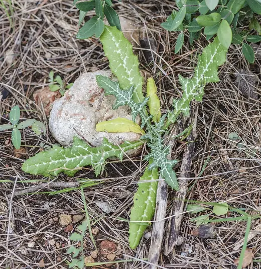

Sow thistle
Sow thistle is a wild green you can forage from March to September across the United States. Common weed with dandelion-like yellow flowers on branched, hollow stems; soft-edged leaves that clasp the stem.

When is sow thistle in season in the United States?
Sow thistle is usually in season March to September. Timing shifts with weather, latitude and altitude.
Where does sow thistle grow in the United States?
Sow thistle grows across the United States. Regions: Northeast, Southeast, Midwest, Great Plains, Southwest, Rocky Mountains, Pacific Northwest, California, Alaska.
How do you recognise sow thistle?
Common weed with dandelion-like yellow flowers on branched, hollow stems; soft-edged leaves that clasp the stem.
How do you harvest sow thistle?
Pinch off young tips and top leaves before the plant flowers, when they are tender and mild. Leave the roots and lower leaves so it regrows. Pick away from roads, sprayed verges and dog-walking paths.
How do you eat sow thistle?
Young leaves raw or sautéed; stems peeled and cooked.
How do you store sow thistle?
Blanch and freeze.
What is sow thistle good for?
Vitamin A, Vitamin C.